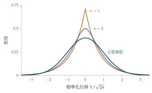

STEP III 2008，第 12 題
繼續之前，請先閱讀題目（原題為英文）。題目載於 STEP Support Programme 的題目資料庫： step.maths.org/questions/08-s3-q12
引子
把許多微小而獨立的隨機效應加起來，不論每一個效應本身服從甚麼分佈，總和都會服從鐘形的正態曲線。這就是中心極限定理（central limit theorem），它也許是概率論中最重要的定理。它解釋了為何身高、量度誤差和考試分數都大致服從正態分佈（normal distribution），也解釋了為何統計學家即使對背後的分佈一無所知，仍能說出一個平均值有多可靠，只要該分佈的方差（variance）有限便可（試與 第 12.22 節 比較）。
本題在一個特殊情況下證明這個定理。一隻青蛙隨機跳躍，每次跳躍服從雙邊指數分佈（two-sided exponential distribution），其密度函數（density）有一個尖峯，完全不像鐘形。跳了許多次之後，牠的總位移卻服從正態分佈。所用的工具是矩母函數（moment generating function），它把獨立變量之和化為乘積，再取對數，又把乘積化為和。
矩母函數已於 2019 年從 STEP 考試大綱中刪除。隨機變量（random variable）\(X\) 的矩母函數是 \(\mathrm{M}_X(\theta) = \mathrm{E}(e^{\theta X})\)。它在 \(0\) 處的各階導數給出各階矩（moments）：\(\mathrm{M}'(0) = \mathrm{E}(X)\)，\(\mathrm{M}''(0) = \mathrm{E}(X^2)\)。若 \(X\) 與 \(Y\) 獨立（independent），則 \(\mathrm{M}_{X+Y} = \mathrm{M}_X\mathrm{M}_Y\)，而且 \(\mathrm{M}_{cX}(\theta) = \mathrm{M}_X(c\theta)\)。若矩母函數收斂，則（在適當的意義下）分佈也收斂。
動筆之前
密度函數 \(\frac12e^{-|x|}\) 是對稱的。它的圖像是甚麼樣子？它的平均值（mean）是多少？
它是一條帳篷形的曲線，在 \(0\) 處有一個高度為 \(\frac12\) 的尖峯，並向兩邊按指數衰減（圖 12.24.1）。由對稱性可知平均值為 \(0\)。
逐步解題
階段 1 矩母函數
當 \(|\theta| < 1\) 時，把積分在 \(0\) 處分開， \[\mathrm{M}_X(\theta) = \frac12\int_{-\infty}^0e^{(1 + \theta)x}\,\mathrm{d}x + \frac12\int_0^\infty e^{-(1 - \theta)x}\,\mathrm{d}x = \frac12\Bigl(\frac{1}{1 + \theta} + \frac{1}{1 - \theta}\Bigr) = \frac{1}{1 - \theta^2}. \qed\] 展開得 \(\mathrm{M}_X(\theta) = 1 + \theta^2 + \theta^4 + \cdots\)，所以 \(\mathrm{E}(X) = 0\)，\(\mathrm{E}(X^2) = 2\)（即 \(\frac{\theta^2}{2!}\) 的係數）。方差為 \(2\)。
階段 2 青蛙的位移
\(Y = X_1 + \cdots + X_n\) 的矩母函數是甚麼？\(Y/\sqrt{2n}\) 的又是甚麼？
由獨立性得 \(\mathrm{M}_Y(\theta) = (1 - \theta^2)^{-n}\)，再作縮放， \[\mathrm{M}_{Y/\sqrt{2n}}(\theta) = \mathrm{M}_Y\Bigl(\frac{\theta}{\sqrt{2n}}\Bigr) = \Bigl(1 - \frac{\theta^2}{2n}\Bigr)^{-n}.\] （除以 \(Y\) 的標準差（standard deviation）\(\sqrt{2n}\) 作縮放，令方差變為 \(1\)。）
階段 3 極限
取對數，並利用當 \(u\) 很小時 \(\ln(1 - u) \approx -u\)。
\(\ln\mathrm{M}_{Y/\sqrt{2n}}(\theta) = -n\ln\bigl(1 - \frac{\theta^2}{2n}\bigr) = -n\bigl(-\frac{\theta^2}{2n} - \frac{\theta^4}{8n^2} - \cdots\bigr) \to \frac{\theta^2}{2}\)，所以 \[\mathrm{M}_{Y/\sqrt{2n}}(\theta) \to e^{\theta^2/2}, \qed\] 這正是標準正態分佈的矩母函數。
階段 4 青蛙的機會
當 \(n\) 很大時，\(Y\) 近似服從 \(\mathrm{N}(0, 2n)\)。何時有 \(\mathrm{P}(|Y| \geq 25) = 0.05\)？
對於標準正態變量 \(Z\)，\(\mathrm{P}(|Z| \geq 1.96) = 0.05\)。因此我們需要 \(\frac{25}{\sqrt{2n}} = 1.96\)，由此得 \(2n = \bigl(\frac{25}{1.96}\bigr)^2 \approx 162.7\)，即 \(n \approx 81.3\)。由於落在遠處的機會隨 \(n\) 增大而增加，要有至少 \(5\%\) 的機會，最少的跳躍次數約為 \(82\)。■

回顧
變換把和化為乘積。獨立變量之和的矩母函數，等於各變量矩母函數的乘積。
對數把乘積化為和。\(\ln\bigl(1 - \frac{\theta^2}{2n}\bigr)^{-n}\) 變成了一個和，其極限很容易求得。
標準化（standardise）。除以標準差 \(\sqrt{2n}\) 令方差保持為 \(1\)，所以極限既不是 \(0\)，也不是無窮大。
背後的數學
一般的定理
同樣的論證適用於任何平均值為 \(0\)、方差 \(\sigma^2\) 有限的分佈（還須有矩母函數，不過這個條件可以避開）。這時 \(\mathrm{M}(\theta) = 1 + \frac12\sigma^2\theta^2 + o(\theta^2)\)，而且 \[\Bigl(\mathrm{M}\Bigl(\frac{\theta}{\sigma\sqrt n}\Bigr)\Bigr)^n = \Bigl(1 + \frac{\theta^2}{2n} + o\Bigl(\frac1n\Bigr)\Bigr)^n \to e^{\theta^2/2}.\] 取極限之後只有方差留下來：原來分佈的形狀已被遺忘。這就是正態分佈具有普遍性的原因。在大學裏，這個定理是用特徵函數（characteristic function）\(\mathrm{E}(e^{i\theta X})\) 來證明的，特徵函數必定存在，而分佈的收斂則由萊維連續性定理（Lévy’s continuity theorem）賦予嚴格的意義。
有多快？
中心極限定理說明極限情況下會發生甚麼，卻沒有說明收斂得有多快。Berry–Esseen 定理（Berry–Esseen theorem）給出誤差的上界：一個常數乘以 \(\frac{\mathrm{E}|X|^3}{\sigma^3\sqrt n}\)。對於像青蛙跳躍那樣的對稱分佈，跳了幾十次之後近似已相當準確。對於偏態（skewed）分佈，或者在極端的尾部，即使 \(n\) 很大，近似也可能很差：正態近似會低估極罕見事件發生的機會，這個事實對保險和金融都有影響。
棣美弗（De Moivre）在 1733 年發現了二項分佈（binomial distribution）的正態近似（第 12.23 節），拉普拉斯在 1810 年把它推廣至更一般的變量之和，並首先提出量度誤差是許多微小效應之和這個想法。嚴格的證明要到很久之後才出現：李亞普諾夫（Aleksandr Lyapunov）在 1901 年給出證明，Jarl Lindeberg 則在 1922 年給出證明，並找到了基本上是令定理成立的最弱條件。「中心極限定理」這個名稱是波利亞（George Pólya）在 1920 年起的，意思是這個定理在概率論中處於中心地位。
思維技巧
一個困難的運算（把獨立隨機變量相加，即對它們的密度函數作卷積（convolution）），經過變換之後變成一個容易的運算（乘法）。在那裏完成工作，然後詮釋所得的結果。
同樣的策略也是生成函數（generating functions）（第 9.4 節）、分析學和工程學中的傅立葉（Fourier）變換和拉普拉斯變換，以及把乘法化為加法的對數背後的原理。
延伸練習
兩次跳躍的精確結果。證明 \(Y = X_1 + X_2\) 的密度函數為 \(\frac14(1 + |y|)e^{-|y|}\)，並驗證其方差為 \(4\)。
從二項到正態。設 \(X \sim \mathrm{B}(1, \frac12)\)，並把它平移使平均值為 \(0\)（即取值 \(\pm\frac12\)），求出 \(\mathrm{M}_X(\theta) = \cosh\frac\theta2\)，並證明 \(n\) 個這樣的變量的標準化和的矩母函數趨向 \(e^{\theta^2/2}\)。
青蛙的精確結果。利用電腦（或以 \(n = 2\) 時的精確密度函數作檢驗），看看當 \(n = 82\) 時正態近似有多準確。
為何柯西不行？柯西分佈（Cauchy distribution）（第 12.22 節）沒有矩母函數。論證中哪一步失效？\(n\) 個柯西變量的平均值又會怎樣？
延伸閱讀
Geoffrey Grimmett & Dominic Welsh, Probability: An Introduction（Oxford University Press），關於生成函數和極限定理的一章。
Hans Fischer, A History of the Central Limit Theorem（Springer）。從拉普拉斯到 Lindeberg。
David Spiegelhalter, The Art of Statistics（Pelican），講述為何正態分佈無處不在。